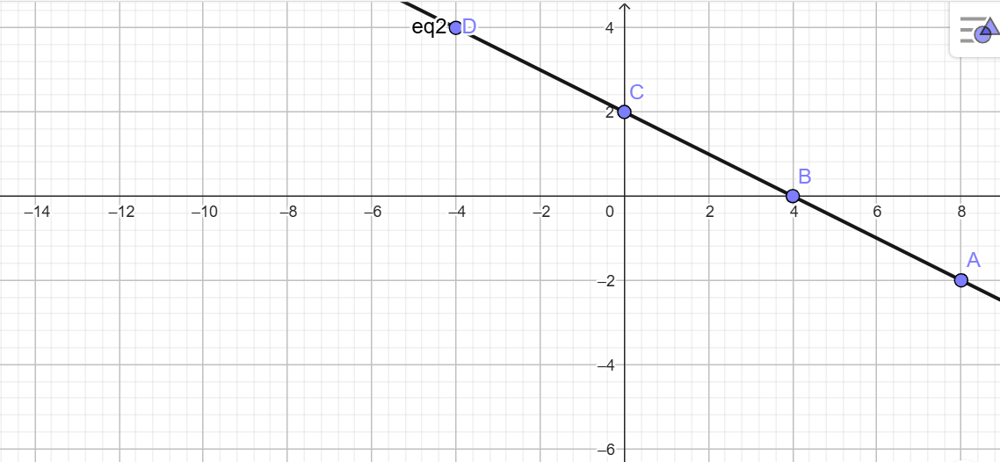

Komputasi Aljabar Linier#
sistem linier#
sistem linier adalah sistem yang beroperasi dengan cara yang proporsional dan terukur, di mana perubahan pada input menghasilkan perubahan yang sebanding pada output.
Persamaan linier#
Persamaan linier adalah persamaan matematika yang menggambarkan hubungan antara variabel yang memiliki pangkat tertinggi 1 (linear)
Contoh persamaan linier dengan satu variabel adalah : 2𝑥+ 3 = 7
Contoh persamaan dengan dua variabel, seperti : 3𝑥 + 4𝑦 =12
𝑥 dan 𝑦 tersebut adalah variabel, dan grafiknya akan membentuk garis lurus di bidang koordinat dua dimensi.
Sistem persamaan linier#
Sistem persamaan linier adalah kumpulan dua atau lebih persamaan linier yang melibatkan variabel yang sama.
contoh sebuah sistem persamaan linier dengan dua variabel bisa berbentuk seperti ini:
2𝑥+3𝑦=8
4𝑥−𝑦=2
Dalam contoh ini, kita memiliki dua persamaan linier yang melibatkan dua variabel, 𝑥 dan 𝑦 Sistem ini mencari nilai-nilai 𝑥 dan 𝑦 yang memenuhi kedua persamaan sekaligus.
penyelesaian tunggal#
Penyelesaian tunggal berarti ada satu nilai unik ( terdapat hanya satu solusi yang memenuhi semua persamaan dalam sistem tersebut ) 𝑥 dan 𝑦 yang membuat kedua persamaan ini benar pada saat bersamaan.
Contoh :
2𝑥+3=8
4𝑥−𝑦=2

Tidak memiliki penyelesaian#
dalam sistem persamaan linier terjadi ketika sistem tersebut bertentangan, yang berarti tidak ada kombinasi nilai variabel yang dapat memenuhi semua persamaan dalam sistem tersebut secara bersamaan.
Contoh :
2𝑥+3𝑦=6
4𝑥+6𝑦=15

Jika kita mencoba menyelesaikan sistem ini, kita akan melihat bahwa kedua persamaan ini saling bertentangan. Dalam hal ini, meskipun koefisien dari 𝑥 dan 𝑦 dalam kedua persamaan tampak berhubungan, konstanta di sisi kanan berbeda, yang berarti kedua garis akan berparalel dan tidak akan berpotongan.
Memiliki banyak penyelesaian#
disebut memiliki banyak penyelesaian dikarenakan semua persamaan dalam sistem tersebut menggambarkan hubungan yang sama, sehingga tidak ada batasan unik untuk nilai variabel. Dalam hal ini, solusi sistem tersebut bukan hanya satu titik, melainkan seluruh himpunan titik yang terletak pada satu garis atau lebih (tergantung pada jumlah variabel dalam sistem).
Contoh :
𝑥+2𝑦=4

Jika kita melihat persamaan kedua, kita dapat melihat bahwa persamaan kedua sebenarnya adalah kelipatan dua dari persamaan pertama. Oleh karena itu, kedua persamaan ini menggambarkan garis yang sama dalam sistem koordinat, yang berarti sistem ini memiliki tak terhingga banyak solusi (seluruh garis tersebut adalah solusi).